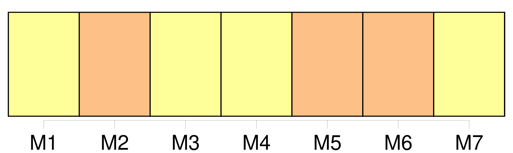

Longueur nb maillons : 9 mentions |
 |
[Les Verts] manifesteront
« Résistance à la Mac Domination », tel sera le mot d'ordre [des Verts du Territoire] face à l'arrivée du premier Mac Donald's du département. Histoire de marquer le coup et de ne pas souhaiter la bienvenue à Mac Do, [les Verts] organiseront demain à 19 h une distribution de pain bio et de comté devant la parcelle du fast food d'Andelnans. [2 phrases] « [Nous] sommes contre l'invasion totale des Mac Donald's, cette standardisation de la bouffe, les conditions de travail, l'élevage intensif du bœuf que cela induit et cette production énorme de déchets. [Nous] ne sommes pas satisfaits de les voir débarquer sur Belfort. [1 phrases] [Les Verts] devraient en rester là pour le moment en ce qui concerne [leurs] actions anti-Mac Do. « Encore que » ajoute un Alain Fousseret malicieux, « [on] organisera peut-être un pique-nique bio en plein milieu du rond-point d'Andelnans!! |
|
Il est possible de télécharger la ressource sur la page Ortolang |
Si vous avez des questions ou vous voyez des erreurs, merci d'envoyer un mail à silvia.federzoni89@gmail.com |